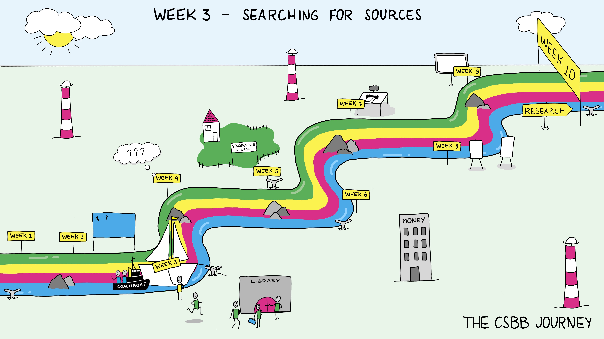

Week 3: Searching for Sources#
Science Spotlights (Monday)
Lecture Advanced literature search (Library?)
Workshop Scientific Communication – Critical Reading
Friday Symposium
Introduction and goals#
A huge part of being a researcher is reading what others have done, and writing what you have done to contribute to the body of scientific knowledge. There are hundreds of scientific journals with thousands of articles published yearly. The quality varies hugely, some are just badly written, and some are actually fraudulent. This week is focused on developing skills in understanding and evaluating the articles you read. How to put them in context, what to look for. Also no one can read it all, so another important aspect in teamwork is distributing the reading load.
The focus of week 3 will be learning how to effectively use, understand and deal with scientific literature. Being able to properly interpret scientific (and non-scientific) resources is important not only in science but also to be able to build well-based opinions in everyday life. In academia, papers published in academic journalswill be the basis of your research and allow you to gain insight into the current state of a topic, as well as challenges and open questions that researchers are facing.
One additional piece is taking the time to develop a strategy of how you’ll keep track of what you’ve read, what notes you might make as you read things for later reference. There are technical tools but also strategies to use.
Explanation of what we want to achieve and why we are including this lecture & workshop
This is a topic that will be important to the students, but some may have already done part of this
Lecture Advanced Literature Search#
Overview#
This workshop focusses on teaching participants how to effectively find appropriate sources for doing literature research. This includes the use of sites such as Scopus, WebOfScience or similar webpages which help in finding sources. To search for scientific literature, it is also necessary to know how to pose specific and helpful research questions.
Key concepts#
How to break the research topic down to concepts,
How to come up with synonyms and alternative terms for each concept,
How to structure a search query (AND, OR, NOT, phrase searching [”…”] and truncation [*]),
Scopus and Pubmed and demonstrate a query in these databases (mention also that other databases exist and provide link to list),
Google Scholar and what are some potential things to consider about using it
How to evaluate the results of a search and adapt it if necessary.
Also how to cite references in papers.
Relevant learning goals#
Workshop Scientific Communication – Critical Reading#
Overview#
The aim of the workshop Scientific Communication – Critical Reading is twofold: (1) introduce the characteristics of the scientific communication environment, and (2) provide guidelines for critically reading scientific texts.
Related to the first aim, the typical features of the rhetorical situation of communication in and about science will be addressed. Various elements in a communicative environment, such as audience, context, and conventions, can influence textual and stylistic choices by writers. We will discuss various genres of scientific communication that students will regularly come across, such as the scientific journal paper.
The second part of the workshop introduces critical reading as one of the first steps in both the research and writing process. Carrying out a critical literature review is an essential first step in the research process, of which scientific texts such as a research proposal or journal paper are an important part. This part of the workshop focuses on guidelines for critical reading of literature, to help students determine key information in relevant sources. It introduces the Scientific Argumentation Model, which is a helpful tool to systematically map scientific sources. Students will analyse and discuss critical examples of relevant papers and by recognizing helpful structural and stylistic elements to navigate such sources.
Key concepts#
Scientific communication: what is it?
Genres in scientific communication
How to read and interpret scientific sources
Writing process (and the role of critical reading in the writing process)
Relevant learning goals#
Understand the elements of the scientific communication situation
Know about various genres in scientific communication and their characteristics
Understand the various stages of the writing process
Understand essential elements and features of scientific texts for critical evaluation
Analyse examples of scientific papers with the Scientific Argumentation Model
Reflect on the value of information provided in scientific texts
Group activity of the week#
This week’s group activity will tie in with the previous week – you will be asked to write a short pitch on your team. This should include element such as what skills and interests your team has, and what you are enthusiastic about doing.
Useful resource for self-study:
TU Present - module on pitch presentations
(TU Present: Brightspace modules on various aspects of developing and giving a presentation, created by ITAV. Modules can easily be integrated into a CSBB minor Brightspace environment.)
Discussion Questions#
How does critical reading of sources differ to how you read other materials such as novels, magazines, and webslogs.
How are you keeping track of what you’ve read so you can refer back to it?
How do you share what you’ve read with others?
What’s the most interesting thing you’ve learned this week?
What did you find effective in good writing?
References#
TU Write – Scientific Writing >> General strategies for scientific reading and writing >> 1. Reading strategies (Brightspace module)
TU Write - Scientific Writing >> General strategies for scientific reading and writing >> 2. Writing strategies (writing process and writing styles)
TU Write - Scientific Writing >> General strategies for scientific reading and writing >> 3. Scientific Argumentation Model
TU Write - Scientific Writing >> The sections of a scientific paper >> The research question
The TUDelft library has an extensive guide dedicated to providing you with support while doing literature research and writing literature reviews. Access it via the following link or by looking for “Searching & Resources” on the TUDelft library website.
this video created by the TU Delft Library which explains reference managers and how they’re used.